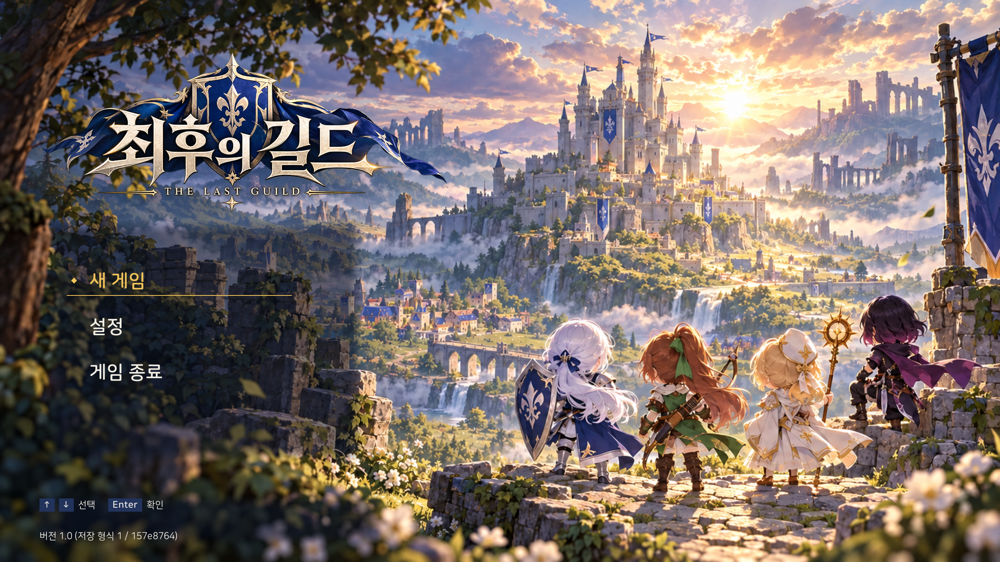
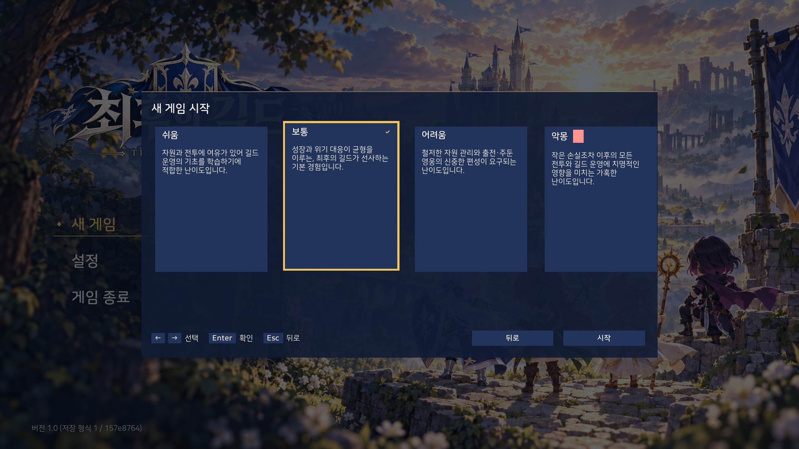
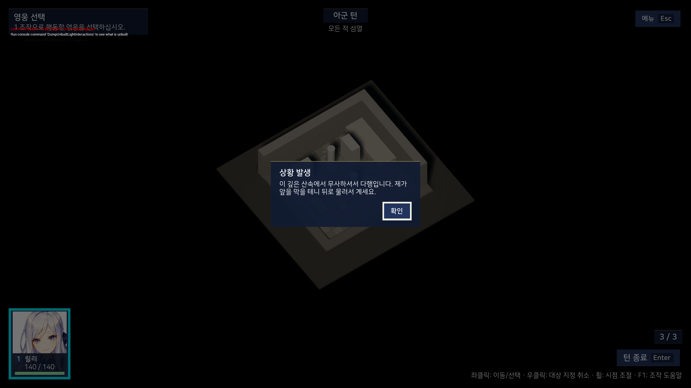
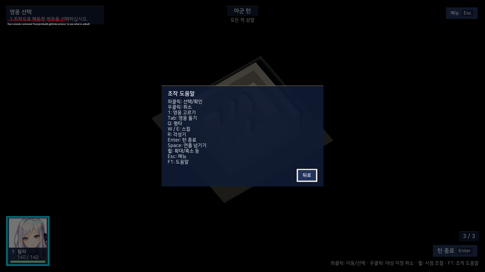
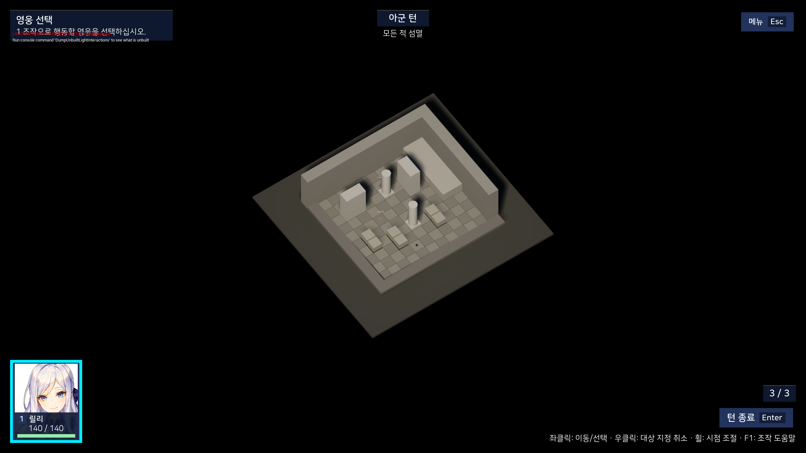
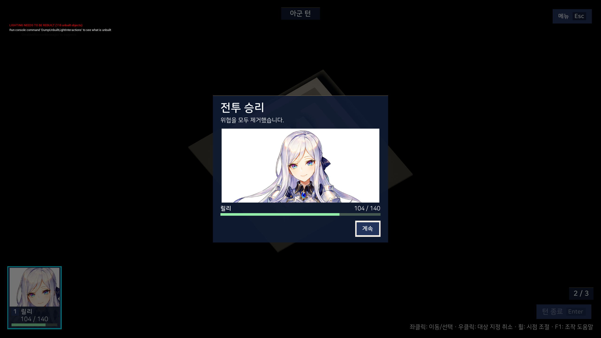
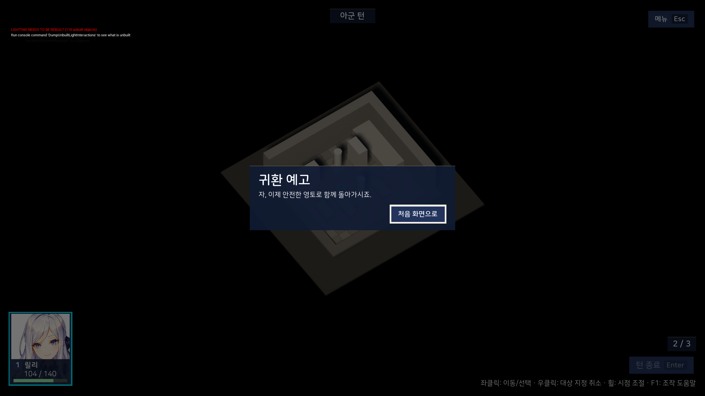

시작·설정
타이틀 · 저장 없음


그림을 불러오는 중입니다.새 게임 · 난이도 선택


그림을 불러오는 중입니다.환경 설정 · 이전 후보
그림을 불러오는 중입니다.
전투·안내
릴리 단독 첫 전투의 도입과 조작 안내입니다. 전장은 임시 도형이며 조명 진단 문구도 촬영된 그대로 남겼습니다.
도입 대사


그림을 불러오는 중입니다.조작 도움말


그림을 불러오는 중입니다.전투 HUD · 영웅 선택 안내


그림을 불러오는 중입니다.결과·저장
전투 승리


그림을 불러오는 중입니다.귀환 예고


그림을 불러오는 중입니다.